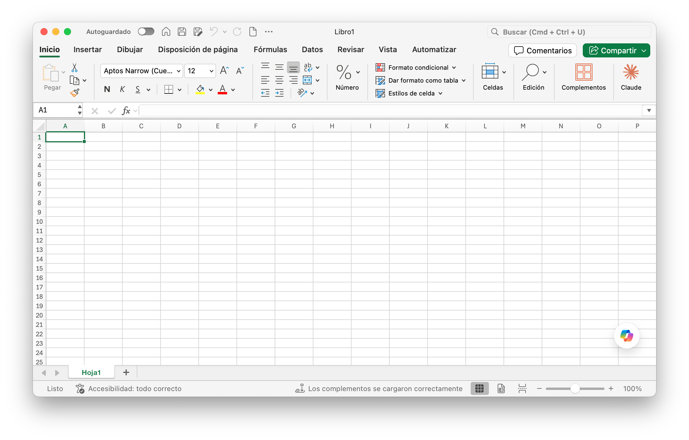

Conocer Excel: libros, hojas y celdas
Excel es una planilla de cálculo: un programa donde los datos se ordenan en filas y columnas y donde se pueden escribir fórmulas que calculan a partir de esos datos. La ventaja central es que, una vez armadas las fórmulas, si cambiás un dato los resultados se actualizan solos. Además de calcular, Excel permite presentar la información con colores, bordes, tamaños de letra y gráficos, para que el trabajo se vea profesional.

Excel forma parte de Microsoft 365. Existe la versión de escritorio (Windows y Mac), que requiere licencia y tiene descuento para estudiantes (el sello de arriba lleva a la página de precios), y una versión para navegador, gratuita con una cuenta de Microsoft, con menos funciones. Todo lo que ves en esta guía se hace en la versión de escritorio.
Cómo abrirlo
En Windows, hacé clic en el botón Inicio, escribí Excel y abrí el programa. En Mac, buscalo en Launchpad o con Spotlight (⌘+Espacio). En la pantalla de inicio elegí Libro en blanco.
⚠️ Material desactualizado
Si trabajás con guías o apuntes viejos de Excel 2007, vas a encontrar el Botón Office y el recorrido Inicio, Todos los programas, Microsoft Office. Ninguno de los dos existe en las versiones actuales: el menú de archivo se llama Archivo y vive arriba a la izquierda.
La pantalla de Excel
| Elemento | Dónde está | Para qué sirve |
|---|---|---|
| Barra de título | Arriba, al centro | Muestra el nombre del libro abierto. Mientras no lo guardes se llama Libro1. |
| Cinta de opciones | Debajo de la barra de título | Reúne todos los comandos en pestañas: Inicio, Insertar, Disposición de página, Fórmulas, Datos, Revisar y Vista. |
| Cuadro de nombres | A la izquierda de la barra de fórmulas | Indica qué celda está activa, y sirve también para saltar a otra escribiendo su nombre. |
| Barra de fórmulas | A la derecha del cuadro de nombres | Muestra el contenido real de la celda activa: si hay una fórmula, la ves acá y la celda muestra el resultado. |
| Área de trabajo | El centro de la pantalla | La cuadrícula de celdas, con letras arriba (columnas) y números a la izquierda (filas). |
| Etiquetas de hoja | Parte inferior | Una pestaña por cada hoja del libro. El signo + agrega una hoja nueva. |
| Barra de estado y zoom | Borde inferior | Muestra mensajes del programa y permite acercar o alejar la vista. |

Un libro en blanco en Excel para Mac. En Windows la distribución es casi idéntica.
Libro, hoja, celda y rango
| Concepto | Qué es |
|---|---|
| Libro | El archivo de Excel (extensión .xlsx). Puede contener una o muchas hojas. |
| Hoja | Cada pestaña del libro. Tiene 16.384 columnas (de la A hasta la XFD) y 1.048.576 filas. |
| Celda | La intersección de una columna y una fila. Se nombra con la letra y el número: B2 es la columna B, fila 2. |
| Celda activa | La celda donde vas a escribir. Aparece con un borde grueso y solo puede haber una. |
| Rango | Un conjunto de celdas contiguas. Se nombra con la primera y la última separadas por dos puntos: A2:A10 o B2:D5. |
| A | B | C | D | |
|---|---|---|---|---|
| 1 | Producto | Cantidad | Precio | |
| 2 | Yerba | 3 | 2500 | |
| 3 | Café | 1 | 4800 | |
| 4 | Azúcar | 2 | 1200 | |
| 5 |
La celda activa es B2 (borde verde). Las celdas resaltadas forman el rango B2:C4.
Moverse por la hoja
| Para ir a... | Teclado (Windows) | Mac |
|---|---|---|
| La celda de al lado | Flechas, o Tab (derecha) y Enter (abajo) | Igual |
| El borde del bloque de datos | Ctrl+Flecha | ⌘+Flecha |
La celda A1 | Ctrl+Inicio | Ctrl+Fn+← |
| La última celda con datos | Ctrl+Fin | Ctrl+Fn+→ |
| Una celda cualquiera | Escribirla en el Cuadro de nombres y apretar Enter | Igual |
Recorrido por la pantalla
- Abrí Excel y creá un Libro en blanco. Mirá la barra de título: debería decir
Libro1. - Ubicá, sin tocar nada, el cuadro de nombres, la barra de fórmulas, la cinta de opciones y las etiquetas de hoja. Hacé clic en las pestañas de la cinta (Inicio, Insertar, Fórmulas, Datos) para ver cómo cambian los comandos.
- Escribí
D25en el cuadro de nombres y apretáEnter. Después volvé a la celdaA1con el atajo de teclado. - Seleccioná el rango
A2:A10arrastrando el mouse. Fijate cómo cambian de color las letras y los números de los encabezados. Leé en el cuadro de nombres cómo se llama lo que seleccionaste. - Agregá una segunda hoja con el signo
+, volvé a la primera haciendo clic en su pestaña y dejá el libro abierto: lo vas a usar en la próxima actividad.
Cargar y corregir datos
Para empezar a darle forma a una planilla hay que cargar los datos y confirmarlos. Mientras la celda sigue en modo edición, el dato no está cargado y la cinta de opciones queda deshabilitada.
| Para... | Hacé esto |
|---|---|
| Confirmar y bajar a la celda de abajo | Enter |
| Confirmar y pasar a la celda de la derecha | Tab |
| Confirmar sin moverte | Clic en la tilde ✓ de la barra de fórmulas |
| Cancelar lo que estás escribiendo | Esc, o la cruz ✗ de la barra de fórmulas |
Texto a la izquierda, números a la derecha
Excel alinea solo los datos según su tipo: el texto va a la izquierda y los números a la derecha. Eso sirve como diagnóstico. En la planilla de abajo, la dosis de Gala quedó a la izquierda: Excel la interpretó como texto y no la va a poder sumar ni promediar.
| A | B | |
|---|---|---|
| 1 | Nombre del paciente | Dosis |
| 2 | Inchausty | 2,4 |
| 3 | Anselmo | 1,5 |
| 4 | Gomez | 2 |
| 5 | Caratti | 4,23 |
| 6 | Gala | 2.3 |
| 7 | Orsi | 2,3 |
El 2.3 de Gala está escrito con punto en lugar de coma y quedó alineado a la izquierda (celda resaltada).
💡 Idea clave
Con la configuración regional de Argentina, el separador decimal es la coma. Si escribís el decimal con punto, Excel lo toma como texto (o, a veces, como una fecha). La señal es siempre la misma: un número que se alinea a la izquierda.
Corregir datos
| Si querés... | Hacé esto |
|---|---|
| Reemplazar todo el contenido | Seleccioná la celda y escribí encima |
| Dejar la celda vacía | Seleccioná la celda y apretá Supr |
| Cambiar solo una parte | Doble clic sobre la celda, o F2 (Mac: Ctrl+U), o editá desde la barra de fórmulas |
| Deshacer la última acción | Ctrl+Z (Mac: ⌘+Z) o el botón de la barra superior |
| Borrar solo el formato o solo el contenido | Inicio → Borrar (la goma) → elegí qué borrar |
💡 Consejo
Si una celda muestra #####, no es un error de cálculo: el dato no entra en el ancho de la columna. Ensanchá la columna (lo vas a ver más abajo en esta misma clase) y el dato aparece.
Planilla de dosis
- En una hoja nueva, cargá desde
A1la planilla de pacientes que ves arriba, respetando los datos tal cual están (incluido el2.3de Gala). - Confirmá cada dato con
Entery verificá que el texto quede a la izquierda y los números a la derecha. - Detectá qué valor de la columna
Dosisquedó alineado a la izquierda y corregilo para que Excel lo reconozca como número. - Corregí Gomez por Gómez sin reescribir toda la celda, usando
F2(o doble clic). - Borrá la celda de Orsi con
Supry recuperala con deshacer.
Hojas y libros: nombrar, organizar y guardar
Un libro puede tener muchas hojas, y conviene que cada una tenga un nombre que diga qué contiene (Enero, Febrero, Gastos) en lugar de Hoja1, Hoja2. Los libros nuevos de las versiones actuales abren con una sola hoja (las versiones antiguas traían tres).
Reglas para el nombre de una hoja
- Hasta 31 caracteres.
- No puede haber dos hojas con el mismo nombre dentro del mismo libro.
- No admite estos caracteres:
: \ / ? * [ ].
Operaciones con hojas
| Acción | Cómo se hace |
|---|---|
| Cambiar el nombre | Doble clic sobre la pestaña, escribí el nombre y Enter. O clic derecho sobre la pestaña → Cambiar nombre. |
| Agregar una hoja | Botón + junto a las pestañas. |
| Mover una hoja | Arrastrar la pestaña hasta su nueva posición. |
| Copiar una hoja | Arrastrar la pestaña manteniendo Ctrl apretada (Mac: Opción), o clic derecho → Mover o copiar → tildar Crear una copia. |
| Eliminar una hoja | Clic derecho sobre la pestaña → Eliminar. |
| Cambiar el color de la pestaña | Clic derecho → Color de pestaña. |
⚠️ Sin vuelta atrás
Eliminar una hoja no se puede deshacer con Ctrl+Z. Si dudás, copiá la hoja antes de borrar.
Guardar el libro
Cuando guardás, Excel no graba solo la hoja donde estás trabajando: guarda todo el libro. Para hacerlo la primera vez:
- Hacé clic en Archivo y elegí Guardar como.
- Seleccioná la carpeta donde lo querés guardar.
- Escribí un nombre relacionado con el contenido, para poder encontrarlo después, y elegí el formato.
- Hacé clic en Guardar.
| Formato | Extensión | Cuándo usarlo |
|---|---|---|
| Libro de Excel | .xlsx | El formato actual. Es el que tenés que usar por defecto. |
| Libro de Excel 97-2003 | .xls | El formato antiguo. Las guías viejas lo piden, pero hoy solo se usa si alguien con un Excel muy viejo necesita abrir el archivo. |
| CSV (delimitado por comas) | .csv | Texto plano, una sola hoja y sin formato. Sirve para pasar datos a otros programas. |
.pdf | Para compartir o imprimir un resultado que no se va a editar. |
💡 Consejo
Si guardás el libro en OneDrive, aparece el interruptor Autoguardado en la barra superior y los cambios se guardan solos. Aun así, ponele nombre apenas lo creás: un archivo llamado Libro1 es tan difícil de encontrar como cualquier archivo sin nombre.
Hojas con nombre y archivo guardado
- Usando el libro de la actividad anterior, renombrá
Hoja1comoPacientesy la segunda hoja comoPrueba. - Copiá la hoja
Pacientesy renombrá la copia comoPacientes copia. Después eliminá la hojaPrueba. - Intentá ponerle a una hoja un nombre con una barra
/y observá qué responde Excel. - Guardá el libro con Archivo → Guardar como en tu carpeta, con el nombre
Ejercicio 01 - Cargar datos - tu apellido.xlsx.
Formato de celdas: número, alineación, fuente, bordes y relleno
El formato de celdas no modifica ningún dato: modifica cómo se ve. Para aplicarlo, seleccioná el rango y usá los botones de la pestaña Inicio, o abrí el cuadro completo con clic derecho → Formato de celdas (Ctrl+1, en Mac ⌘+1). El cuadro tiene seis solapas:
| Solapa | Qué resuelve |
|---|---|
| Número | Cómo se muestra un valor: moneda, porcentaje, fecha, texto, cantidad de decimales. |
| Alineación | Posición del contenido dentro de la celda, ajuste de texto, combinación de celdas, orientación. |
| Fuente | Tipo de letra, tamaño, estilo, color y efectos (superíndice, subíndice). |
| Bordes | Líneas alrededor y dentro de las celdas, con su estilo y color. |
| Relleno | Color y trama de fondo. |
| Proteger | Bloquear u ocultar celdas, para evitar modificaciones. |
Número
| Formato | Qué hace | Atajo en la cinta |
|---|---|---|
| General | El formato por defecto: muestra lo que escribiste. | |
| Número | Fija la cantidad de decimales y permite separador de miles. | Botones de decimales y de miles 000 |
| Moneda / Contabilidad | Agrega el símbolo $. Contabilidad además alinea los símbolos en columna. | Botón de moneda |
| Fecha / Hora | Muestra una fecha o una hora con distintos aspectos. | Lista Número de Inicio |
| Porcentaje | Muestra el valor como porcentaje. | Botón % |
| Texto | Trata el contenido como texto, aunque sean números (códigos, teléfonos). | |
| Personalizada | Permite armar un formato propio, por ejemplo 0" m". | Formato de celdas → Número |
⚠️ Cuidado con el porcentaje
El botón % multiplica por cien el contenido de la celda. Si la celda ya tenía un 25 y aplicás el formato porcentaje, queda 2500%. Para obtener 25%, aplicá primero el formato y recién después escribí el número.
El formato personalizado es útil para agregar una unidad sin romper el cálculo. Con el formato 0" m" la celda muestra 5 m, pero sigue siendo el número 5 y se puede sumar:
| A | |
|---|---|
| 1 | Distancia |
| 2 | 5 m |
| 3 | 15 m |
| 4 | 25 m |
La celda muestra 5 m, pero la barra de fórmulas revela que el contenido es el número 5.
Alineación
| Opción | Qué hace |
|---|---|
| Alineación horizontal | Izquierda, centro o derecha dentro de la celda. |
| Alineación vertical | Arriba, al medio o abajo. Útil cuando la fila es alta. |
| Ajustar texto | Reparte el texto en varias líneas dentro de la misma celda, sin cambiar el ancho de la columna. |
| Reducir hasta ajustar | Achica la letra para que entre en una sola línea. |
| Combinar y centrar | Une varias celdas en una sola. Sirve para títulos. |
| Orientación | Gira el texto en grados, por ejemplo en vertical. |
💡 Idea clave
Combinar celdas es ideal para un título que ocupa todo el ancho de una tabla, pero no combines celdas dentro de la zona de datos: una tabla con celdas combinadas no se puede ordenar ni filtrar bien.
Fuente, bordes y relleno
La solapa Fuente funciona igual que en Word: tipo de letra, tamaño, negrita , cursiva , subrayado y color . En Excel en español los botones se llaman N, K y S.
Para los bordes , seguí siempre este orden dentro de la solapa Bordes del cuadro de formato, para poder poner de una sola vez bordes internos y externos distintos:
- Seleccioná el rango al que le vas a aplicar bordes.
- Elegí primero el color.
- Después el estilo de línea.
- Por último la ubicación (contorno, interior, o cada lado por separado). Controlá en la vista previa que se vea lo que querés.
El relleno pinta el fondo de las celdas con un color sólido o una trama. La solapa Proteger permite marcar celdas como Bloqueadas u Ocultas, pero solo tiene efecto cuando después protegés la hoja desde Revisar → Proteger hoja.
Planilla de la Clínica del Sur
- En una hoja nueva armá la planilla de pacientes siguiendo esta estructura (la fila 1 es el título; las filas 2 y 3 son los encabezados):
A B C D E F 1 Clínica del Sur 2 N° de paciente Nombre y apellido Fecha de internación Diagnóstico Médico responsable 3 Ingreso Alta 4 5 Estructura de la planilla: el título ocupa
A1:F1; Fecha de internación está sobre Ingreso y Alta; los demás encabezados ocupan dos filas. - En la fila 1, sin combinar, aplicá el mismo color de relleno a
A1:F1y un borde externo. Escribí el título enA1. - Combiná
C2:D2para Fecha de internación y combiná en vertical (filas 2 y 3) los encabezados que ocupan dos filas. Centralos horizontal y verticalmente. - Aplicá bordes finos a los encabezados
A2:F3. - Cargá estos cinco pacientes desde la fila 4 y poné bordes punteados horizontales entre registros:
N° Nombre y apellido Ingreso Alta Diagnóstico Médico 101 Laura Benítez 05/03/2026 09/03/2026 Neumonía Dr. Ferreyra 102 Hugo Sosa 06/03/2026 08/03/2026 Fractura de tibia Dra. Molina 103 Irene Paz 07/03/2026 14/03/2026 Apendicitis Dr. Ferreyra 104 Raúl Ibarra 10/03/2026 12/03/2026 Deshidratación Dra. Molina 105 Ana Duarte 11/03/2026 15/03/2026 Bronquitis Dr. Castro - Verificá que las fechas queden alineadas a la derecha (son números para Excel) y guardá como
Ejercicio 05 - Revisión de formato - tu apellido.xlsx.
Filas, columnas, series y orden
Ancho de columna y alto de fila
| Para... | Cómo |
|---|---|
| Ajustar a mano | Ubicá el puntero en la línea que separa dos letras de columna (o dos números de fila): cambia de forma. Arrastrá. |
| Autoajustar al contenido | Doble clic sobre esa misma línea de separación. |
| Fijar una medida exacta | Inicio → Formato → Ancho de columna o Alto de fila, y escribí el valor. |
Insertar y eliminar filas y columnas
Hacé clic derecho sobre la letra de la columna o el número de la fila y elegí Insertar o Eliminar. Al estar seleccionada la fila o columna completa, Excel entiende que querés insertar una fila o columna entera. La fila nueva aparece arriba de la seleccionada y la columna nueva a la izquierda. También podés usar Inicio → Insertar → Insertar filas de hoja o Insertar columnas de hoja.
El controlador de relleno y las series
En la esquina inferior derecha de la celda activa hay un cuadradito : es el controlador de relleno (también se lo llama manejador). Cuando apoyás el puntero encima, se transforma en una cruz negra. Arrastrándolo, copiás el contenido a las celdas vecinas o completás una serie.
| Escribís... | Arrastrás el controlador y obtenés |
|---|---|
Lunes | Martes, miércoles, jueves... (los días de la semana se repiten solos) |
Enero | Febrero, marzo, abril... |
5 en una celda y 10 en la siguiente (seleccionando las dos) | 15, 20, 25...: Excel detecta el intervalo entre los dos números y lo repite |
07/08/2026 y 14/08/2026 (seleccionando las dos) | 21/08/2026, 28/08/2026...: una fecha cada siete días |
| Un número o un texto suelto | Se copia igual en todas las celdas |
Si tenés al lado una columna con datos, un doble clic sobre el controlador rellena hacia abajo hasta donde llegan esos datos.
Series con más control: Rellenar → Series
Escribí el primer valor, seleccionalo y andá a Inicio → Rellenar → Series. En el cuadro se configura:
| Opción | Qué define |
|---|---|
| Tipo | Lineal (suma un incremento), geométrica (multiplica), cronológica (fechas) o autorrellenar. |
| Unidad de tiempo | Para series cronológicas: día, día laborable (salta sábados y domingos), mes o año. |
| Incremento y límite | De cuánto en cuánto avanza la serie y en qué valor se detiene. |
Ordenar datos
Ordenar una planilla es acomodar sus filas según los valores de una o más columnas. Para ordenar por una sola columna alcanza con ubicarte dentro de la tabla y usar los botones de orden de menor a mayor o de mayor a menor. Para ordenar por varios criterios:
- Hacé clic dentro de la tabla (o seleccionala completa) y andá a Datos → Ordenar. También sirve Inicio → Ordenar y filtrar → Orden personalizado.
- Tildá Mis datos tienen encabezados.
- Elegí la primera columna y su orden (ascendente o descendente).
- Con Agregar nivel sumá el segundo criterio, y el tercero si hace falta.
Un segundo criterio solo se usa cuando el primero se repite. Si ordenás por Sector, luego por Apellido y luego por Nombre, los apellidos se ordenan dentro de cada sector y los nombres dentro de cada apellido repetido.
⚠️ Se rompe el registro
Ordená siempre la tabla completa, nunca una sola columna seleccionada a mano. Si ordenás únicamente una columna, esa columna cambia de lugar pero las demás no, y cada dato queda pegado a la persona equivocada.
Buscar y reemplazar
En una planilla larga no hace falta recorrer celda por celda para encontrar un dato o corregirlo en todas partes. Con Ctrl+B abrís Buscar (en Mac, ⌘+F) y con Ctrl+L abrís Reemplazar (en Mac, Control+H). También están en Inicio → Buscar y seleccionar.
- Escribí en Buscar lo que querés encontrar. Buscar siguiente te lleva a cada coincidencia y Buscar todos las lista juntas.
- En la pestaña Reemplazar, escribí en Reemplazar con el texto nuevo.
- Usá Reemplazar para cambiar de a una coincidencia, o Reemplazar todos para cambiarlas todas a la vez.
⚠️ Reemplazar todos
Reemplazar todos cambia todo lo que coincida, incluso dentro de otras palabras. Si reemplazás sol por luz, Solana también se modifica. Antes de confirmar, probá con Buscar todos y revisá las coincidencias; si te equivocás, deshacé con Ctrl+Z.
Temperaturas del país
- En una hoja nueva armá esta tabla desde
A1y ponele bordes:Ciudad Temperatura mínima Temperatura máxima Buenos Aires 12 21 Córdoba 9 24 Mendoza 7 25 Salta 10 27 Bariloche 2 13 Rosario 11 22 Tucumán 13 28 Ushuaia -1 7 Mar del Plata 10 18 Neuquén 6 23 - Insertá una columna a la izquierda de Ciudad, llamala Número de orden y completá del 1 al 10 con el controlador de relleno.
- Ordená la tabla con tres niveles: primero por Temperatura máxima, después por Temperatura mínima y por último por Ciudad.
- Con Buscar y reemplazar cambiá Mar del Plata por Mar del Plata (BA). Antes de confirmar, usá Buscar todos para ver cuántas coincidencias hay.
- Insertá una fila al principio, combiná y centrá las celdas de esa fila sobre el ancho de la tabla y escribí el título Temperaturas del país.
- Guardá como
Ejercicio 02 - Temperaturas - tu apellido.xlsx.
Series con fechas: Ingresos y Egresos
- Armá la planilla
Día | Ingresos | Egresos. - Escribí
01/08/2026en la primera celda de la columna Día y completá la serie hasta el 15 de agosto usando Inicio → Rellenar → Series, tipo Cronológica, unidad Día laborable. - Cargá importes inventados de ingresos y egresos para cada día y aplicales formato Moneda.
- Aplicá bordes y sombreado al encabezado y guardá como
Ejercicio 03 - Series con fechas - tu apellido.xlsx.
Pacientes por obra social
- Armá esta tabla. Los días se completan arrastrando
Lunesy las fechas con una serie desde03/06/2026:Día Fecha OSECAC IOMA OSPLAD Lunes 03/06/2026 10 8 15 Martes 04/06/2026 15 20 17 Miércoles 05/06/2026 21 16 10 Jueves 06/06/2026 12 13 23 Viernes 07/06/2026 9 4 14 Sábado 08/06/2026 5 5 7 Domingo 09/06/2026 2 0 9 - Combiná la columna de la izquierda (sobre las siete filas de datos), escribí Clínica del Sur y cambiá la orientación del texto a vertical.
- Ordená la tabla por la columna IOMA de mayor a menor, seleccionando la tabla completa, y comprobá que cada fila conserva su día y su fecha. Después volvé al orden original ordenando por Fecha.
- Guardá como
Ejercicio 04 - Clínica del Sur - tu apellido.xlsx.
Ilustraciones: imágenes, formas e íconos
Una planilla no es solo números: a veces necesita un logo, una flecha o un esquema. Todo eso vive en la pestaña Insertar, en el grupo Ilustraciones.
| Ilustración | Qué es |
|---|---|
| Imágenes | Una foto o un logo desde tu equipo (Este dispositivo), de la colección de imágenes de archivo o buscada en línea. |
| Formas | Rectángulos, flechas, llamadas de texto y otras figuras que se dibujan sobre la hoja. |
| Íconos | Pictogramas simples que se pueden recolorear. |
| SmartArt | Diagramas listos para completar: procesos, jerarquías, ciclos. |
Al seleccionar una imagen aparece la pestaña Formato de imagen, con herramientas para recortarla, cambiar su tamaño, ajustar brillo y contraste, aplicar estilos y agregar un texto alternativo que describe la imagen para quienes usan lector de pantalla.
⚠️ Material desactualizado
Las guías viejas mencionan las imágenes prediseñadas (Clip Art). Esa colección ya no existe en las versiones actuales de Excel: se reemplazó por imágenes de archivo e imágenes en línea.
Tu salud: medicina prepaga
- Diseñá una planilla de medicina prepaga. En
A1:A10combiná las celdas y escribí con orientación vertical la frase Prevenir es mejor que curar. - Escribí el título Tu Salud - Medicina Prepaga en una celda combinada sobre el ancho de la tabla.
- Armá los encabezados
Fecha | Apellido | Nombre | Anticipo | Cuota 1 | Cuota 2con relleno y bordes, y cargá cinco asociados inventados con importes en formato Moneda. - Insertá una forma (por ejemplo una cruz) cerca del título y dale un color de relleno.
- Guardá como
Ejercicio 06 - Tu salud - tu apellido.xlsx.
Resumen de la clase
Pasaste de una cuadrícula vacía a una planilla con nombre, datos bien cargados y presentación prolija. Aprendiste a reconocer cada parte de la pantalla, a detectar un número que Excel está leyendo como texto, a organizar un libro en hojas con nombre, a darle formato a un rango y a completar series y ordenar datos sin romper los registros.
Actividades
 Actualizá tu LinkedIn
Actualizá tu LinkedIn
Microsoft Excel. Cómo la justificás: cargo y estructuro datos en planillas con formato numérico correcto, series automáticas, ordenamiento por varios criterios y una presentación profesional (bordes, relleno, combinación de celdas), de modo que queden listas para extenderse con fórmulas.
Referencia rápida
Enter para saltar a ellaCtrl+Inicio (Mac: Ctrl+Fn+←)Ctrl+Fin (Mac: Ctrl+Fn+→)Ctrl+Flecha (Mac: ⌘+Flecha)A2:A10Enter, Tab o ✓. Cancelar: EscF2 o doble clic (Mac: Ctrl+U)Ctrl+Z (Mac: ⌘+Z)##### significa columna angosta, no error de cálculo.Ctrl + arrastrar la pestaña (Mac: Opción).xlsxCtrl+1 (Mac: ⌘+1)0" m"% multiplica por 100 lo que ya está escrito.Ctrl+B (Mac: ⌘+F). Reemplazar: Ctrl+L (Mac: Control+H)Glosario
Archivo de Excel, con extensión .xlsx. Puede contener una o muchas hojas.
Cada una de las pestañas de un libro. Es una cuadrícula de filas y columnas donde se cargan los datos.
Unidad básica de la hoja, identificada por la intersección de una columna (letra) y una fila (número), por ejemplo B2.
La celda donde se escribe o se pega en este momento. Se reconoce por su borde grueso y solo hay una.
Conjunto de celdas contiguas, nombrado con la primera y la última separadas por dos puntos, por ejemplo A2:A10.
Casilla a la izquierda de la barra de fórmulas que indica la celda activa y permite saltar a otra celda escribiendo su nombre.
Franja que muestra el contenido real de la celda activa, sea un dato o una fórmula.
Conjunto de propiedades visuales (número, alineación, fuente, bordes, relleno) que cambian cómo se ve un dato sin alterarlo.
Formato de número armado a medida, como 0" m", que agrega texto al mostrar el valor sin convertirlo en texto.
Cuadrado en la esquina inferior derecha de la celda activa que, al arrastrarlo, copia contenido o completa series.
Secuencia que Excel completa solo a partir de uno o dos valores iniciales: días, meses, números con un intervalo o fechas.
Herramienta que encuentra un dato en toda la hoja y, si se quiere, lo cambia por otro en una o en todas las coincidencias.
Reacomodar las filas de una tabla según los valores de una o más columnas, de menor a mayor o de mayor a menor.
Fuentes
- Universidad Nacional de Quilmes. Informática de Diplomatura: Microsoft Excel y Hoja de Cálculo de Google. Guía de ejercitación de la cátedra (base de esta guía).
- Sánchez, C. Planilla de cálculo: Microsoft Excel 2007. Guía de Informática, material de cátedra.
- Ceballos, M. Módulo sobre herramientas de Excel. Informática para Diplomatura y Enfermería 1, setiembre de 2019.
- Material de cátedra. Tutorial de funciones en Excel 2007 y Tutorial de gráficos en Excel 2007, para Diplomatura.
- Microsoft. Soporte de Microsoft Excel.
support.microsoft.com/es-es/excel